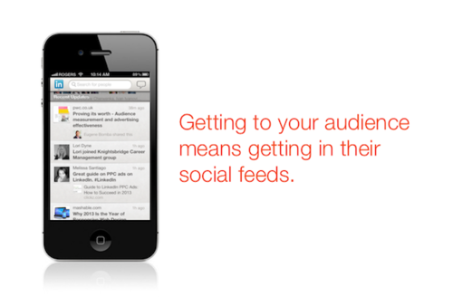
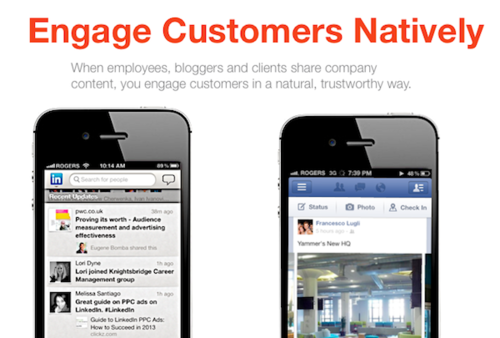

Creating quality B2B content for your audience is hard enough but necessary to execute a successful content marketing strategy. In addition to the difficulty of producing high quality content, there is also the need to produce it frequently enough to engage your audience in multiple areas online.
All of the above activities serve to get enough content to put online. However the goal of B2B content marketing is to put quality content in front your audience. Therefore it's not always reliable to simply post it to Facebook, Twitter, or LinkedIn and hope that your audience tunes in. The best way to get it in front of your audience is to get your content in their social feeds.

And this is where you can rely on help from people who have it in their best interests to help spread your content online. Each of the following types of people listed have a vested interest in helping distribute your B2B content to their audiences — people whom you might not be able to reach otherwise.
1. Employees
Great companies are made up of great people. More often than not, these people have the best interests of the company at heart, since an increase in the company’s market position or sales directly conveys status and opportunity on the employees.
In addition, although it's not part of their job description, it's not a big favor to ask them to help share company content. As long as you're producing high-quality content that makes them proud of the company they work for and reflects a professional status onto them, they will be happy to share it with their friends, family, and professional networks. Don't forget that when someone is sharing content online, they are leveraging the credibility of the publishing source and that being given a sense of purpose is a primary motivators of employees.
By giving employees great content to share online, you're not only increasing the brand awareness of the company, but you're helping the employees build their own brands online, as well.
2. Bloggers
Good content marketers are always aware of who maintains blogs dedicated to their industry. These blogs are not only a great source of ideas for what topics and kinds of content you might produce yourself, but it's also a list of people who are very likely to be interested in re-sharing your content.
Anyone who maintains a publishing presence online and has an audience who regularly reads them is under constant pressure to share quality content, whether original or curated. Bloggers who are thought leaders in their area always want to be aware of any quality content that will be of value to their audience. If your company has the means, you could follow the influencer model put in place by IBM, although it's very possible to put in place an effective strategy without an increase in budget.
By providing industry bloggers with your content, you're giving them high quality material to share with their audience, which will help reinforce their thought leader status.
3. Clients
Your clients (as long as they're happy with your business) are natural spokespeople on behalf of your brand and can be extremely valuable in your B2B content marketing efforts. Similar to employees, it's in their best interests to share your best content albeit for different reasons. And developing client advocacy is one of the leading priorities for CMOs globally.
If a customer has bought your product or service, it's reassuring to them and their colleagues to know that you're producing quality content that demonstrates that you have expertise in your field. It's natural for clients to want to reshare your content with their networks and peers, as this also conveys professional status upon them and their decision to make a purchase based on your expertise.
By providing clients with your content, you're reinforcing their belief in your product or service and helping to bolster their own status among peers and colleagues.

Conclusion
Creating quality B2B content is difficult enough without the added complexity of effective distribution. Make it easy for employees, industry bloggers and clients to share your work with their online networks so you can maximize your distribution and brand awareness with each piece of quality content you produce. Whether you use email lists or specialized influencer marketing tools, make sure these three turbochargers know when you’re putting high-quality content online, and make it easy for them to share it.
Register to attend Content Marketing World 2013 for access to thought leaders, influencers, and other turbochargers for your B2B content marketing efforts.
@ Copyright 2013 Elevate Inc. All Rights Reserved